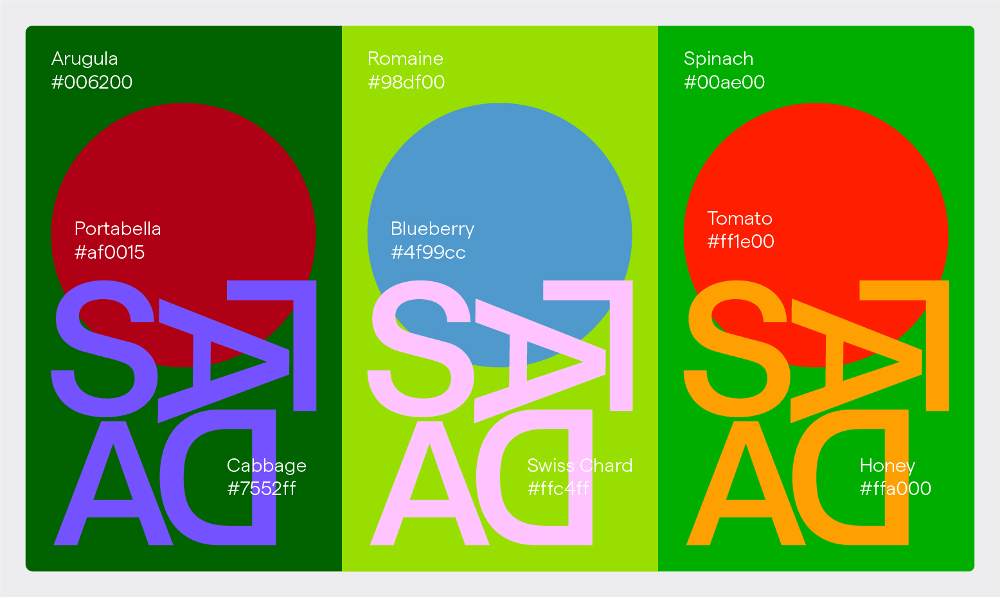
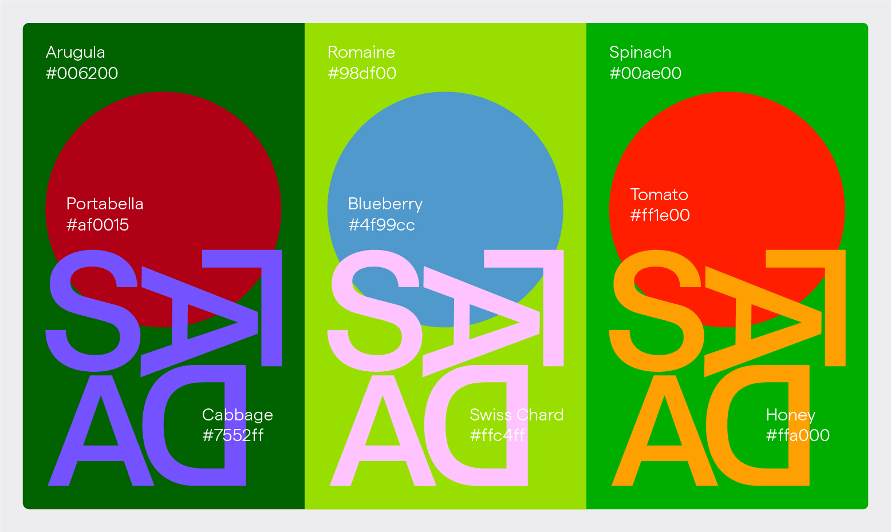

Kosher Symbols [1–148] is a printed catalog and formal exploration of collected kosher certification symbols from around the world. Kosher symbols arose as a direct result of the industrialization of food production in the early twentieth century. This new reality created a need for independent organizations to oversee the food production process to ensure that kosher dietary laws were observed in a factory setting. Thus gave rise to hundreds and then thousands of graphic icons that, when placed on food packaging, indicate the approval and supervision of a specific kosher certification agency. Taken individually, these symbols can seem arbitrary or mundane; yet when viewed as a collection, themes begin to emerge that reflect a collective consciousness about how Jewish designers have chosen to formally represent the values of their culture.
Limited edition shirts were printed in association with the catalog release.
 


Insta Novels is a re-imagining of the way we read, bringing full-length novels to Instagram stories, through the NYPL Instagram account. The process involved creating an identity for the campaign and designing for a completely new reading format, typesetting hundreds of pages for the mobile screen. The project brought nearly 100k new followers to the @NYPL account in the first few weeks of its launch.
Shabbat at The New School was comprised of a pair of cultural events hosted by the Jewish club at The New School. Taking inspiration from the abstract forms of table settings, the identity was designed in order to help promote the event to hundreds of students on campus.